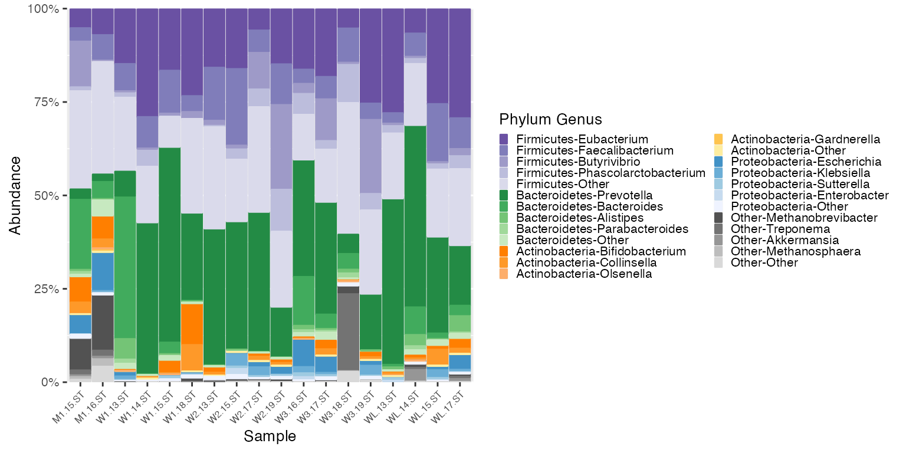

microshades-CMD
Erin Dahl
March 19, 2021
microshades-CMD.RmdCurated Metagenomic Data Vignette
This vignette uses Curated Metagenomic Data of the Human Microbiome.
This data is available in the curatedMetagenomicData library. To download use BiocManager::install("curatedMetagenomicData").
Learn more about the Curated Metagenomic Data here. Secondary link https://bioconductor.org/packages/release/data/experiment/html/curatedMetagenomicData.html
Load datasets and convert to phyloseq objects
# Load the CMD data
britol = BritoIL_2016.metaphlan_bugs_list.stool()
ps_britol = ExpressionSet2phyloseq (britol)## Warning: `data_frame()` is deprecated as of tibble 1.1.0.
## Please use `tibble()` instead.
## This warning is displayed once every 8 hours.
## Call `lifecycle::last_warnings()` to see where this warning was generated.
HMP = HMP_2012.metaphlan_bugs_list.stool()
ps_HMP = ExpressionSet2phyloseq (HMP)The ps_britol object contains 112 samples, and ps_HMP contains 141 samples. To focus on a smaller sample size, use phyloseq function subset_samples(). In this scenario, only schoolage subjects samples will be included.
# Subset the samples
ps_britol_sub <- subset_samples(ps_britol,age_category == "schoolage")
ps_HMP_sub <- subset_samples(ps_HMP,age_category == "schoolage")Now ps_britol_sub object contains 18 samples, and ps_HMP_sub contains 6 samples. Begin using microshades functions to evaluate abundance and apply advanced color organization.
Apply the microshades functions to the Britol dataset.
To orient the shades from the top darkest to lightest instead of from the bottom darkest to lightest, use the top_orientation = TRUE parameter in the create_color_dfs()
# Use microshades function prep_mdf to agglomerate, normalize, and melt the phyloseq object
mdf_britol_pre <- prep_mdf(ps_britol_sub)
# Create a color object for the specified data
color_objs_britol <- create_color_dfs(mdf_britol_pre, top_orientation = TRUE)
# Extract
mdf_britol<- color_objs_britol$mdf
cdf_britol <- color_objs_britol$cdfPlot Britol
The dataframe mdf_britol contains sample data and abundance info. The dataframe cdf_britol stores the color mapping information used for plotting.
plot_microshades produces a stacked barplot with ordered subgroup taxonomy. The darkest shade is the most abundant, and the lightest shade is the least abundant. (excluding the "other" subgroup from each of the selected groups)
plot_britol <- plot_microshades(mdf_britol, cdf_britol)
plot_britol + scale_y_continuous(labels = scales::percent, expand = expansion(0)) +
theme(legend.key.size = unit(0.2, "cm"), text=element_text(size=10)) +
theme(axis.text.x = element_text(size= 6)) 
Reassign colors as desired
To change the colors assignment, use the function color_reassign to specify the groups and colors in order of reassignment. For example, we can change the color assignment of Bacteroidetes to micro_green and the color assignment of Proteobacteria to micro_blue
new_cdf_britol <- color_reassign(cdf_britol,
group_assignment = c("Bacteroidetes", "Proteobacteria"),
color_assignment = c("micro_green", "micro_blue"))
new_plot_britol <- plot_microshades(mdf_britol, new_cdf_britol)
new_plot_britol + scale_y_continuous(labels = scales::percent, expand = expansion(0)) +
theme(legend.key.size = unit(0.2, "cm"), text=element_text(size=10)) +
theme(axis.text.x = element_text(size= 6)) 
Apply the microshades functions to the HMP dataset.
# Use microshades function prep_mdf to agglomerate, normalize, and melt the phyloseq object
mdf_HMP_pre <- prep_mdf(ps_HMP_sub)
# Create a color object for the specified data
color_objs_HMP <- create_color_dfs(mdf_HMP_pre)
# Extract
mdf_HMP <- color_objs_HMP$mdf
cdf_HMP <- color_objs_HMP$cdfPlot HMP
plot_HMP <- plot_microshades(mdf_HMP, cdf_HMP)
plot_HMP + scale_y_continuous(labels = scales::percent, expand = expansion(0)) +
theme(legend.key.size = unit(0.2, "cm"), text=element_text(size=10)) +
theme(axis.text.x = element_text(size= 6))
Examine Legends
HMP_legend <- get_legend(plot_HMP)
plot_grid(HMP_legend)
britol_legend <- get_legend(new_plot_britol)
plot_grid(britol_legend)Each legend is configured to reflect the dataset of the plot. Notice that the Britol and HMP Legends are similar, but not the exact same, due to different top abundances for genera in each phylum.
Use Britol legend for HMP Plot
If the plots are being compared, it may be confusing visually if the genus shading colors account for different genera between the two plots. In this case, the function match_cdf() can apply the color factoring information from one processed mdf to a different, unprocessed mdf.
To use the Britol color legend with the HMP data, apply the Britol color factoring to the HMP data.
mdf_HMP_matched <- match_cdf(mdf_HMP_pre, mdf_britol)
# Use the Britol cdf for color reference
plot_HMP_matched <- plot_microshades(mdf_HMP_matched, new_cdf_britol)
plot_HMP_matched + scale_y_continuous(labels = scales::percent, expand = expansion(0)) +
theme(legend.key.size = unit(0.2, "cm"), text=element_text(size=10)) +
theme(axis.text.x = element_text(size= 6))